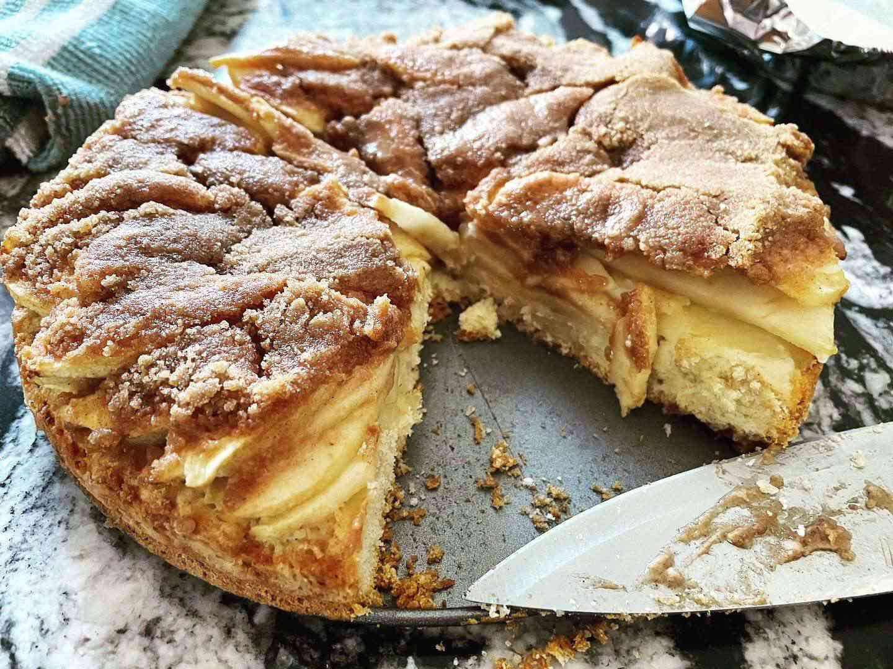

Home
Yabluchnyk (Ukrainian Apple Cake) Recipe

Description
This is a delicious Ukrainian cake that is easy to prepare. You can also use this pastry base with pitted cherries, plums, or sliced peaches.
Ingredients
Cake
- 1 ½ cups all-purpose flour
- ¼ cup white sugar
- 2 teaspoons baking powder
- ¼ teaspoon salt
- ½ cup unsalted butter, cut into pieces
- ⅓ cup cream
- 1 large egg, beaten
- 4 large apples - peeled, cored, and thinly sliced
Streusel Topping
- ½ cup brown sugar
- 2 tablespoons flour
- 2 teaspoons ground cinnamon
- 2 tablespoons cold unsalted butter, cut into pieces
Steps
- Preheat the oven to 375 degrees F (190 degrees C). Lightly butter an 8-inch square baking dish.
- Make the cake: Sift flour, sugar, baking powder, and salt into a mixing bowl. Cut in butter with 2 knives or a pastry blender until mixture is crumbly.
- Whisk cream and egg together in a small bowl; add to flour mixture and gently mix until a soft dough forms. Press into the prepared baking dish. Layer apples over top in neat rows, overlapping slightly.
- Make the streusel topping: Whisk brown sugar, flour, and cinnamon together in a small bowl. Cut in butter until mixture is crumbly. Sprinkle topping over apples.
- Bake in the preheated oven until apples have softened and topping is golden brown, about 25 minutes.